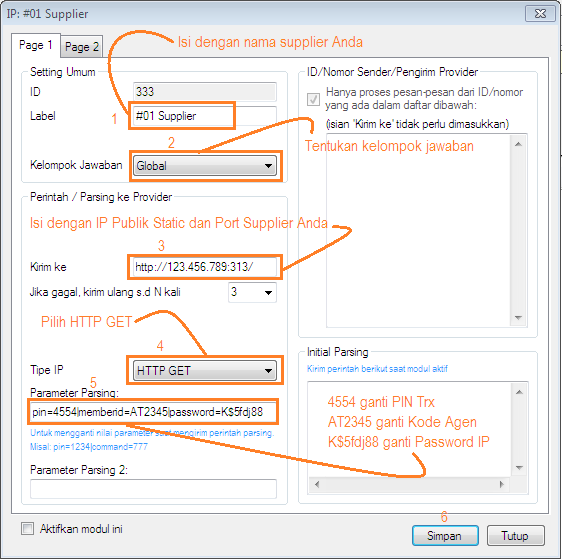
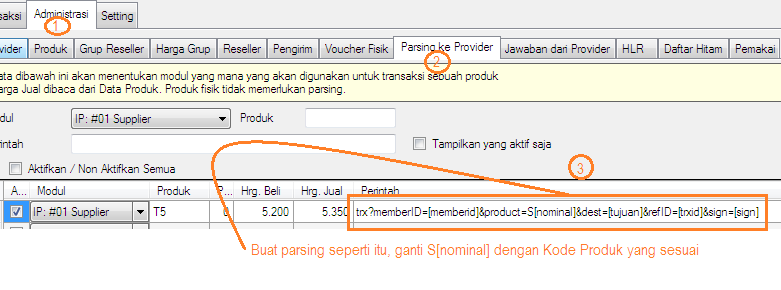

Setting transaksi IP ke OtomaX (3.6.8)
Seperti yang telah kita ketahui bersama OtomaX memiliki Modul IP atau IP Client yang dapat digunakan host to host via IP ke server lain, selengkapnya klik disini, diantaranya ke supplier yang menggunakan software OtomaX. Perlu Anda ingat ini akan bekerja jika edisi OtomaX Anda ialah Enterprise atau Ultimate dan menggunakan versi minimal 3.6.8, sehingga bila edisi OtomaX Anda bukan edisi tersebut silahkan melakukan upgrade terlebih dahulu, klik disini; dan bila Anda ingin membeli OtomaX baru klik disini dan bila mau update ke versi 3.6.8 klik disini.
Berikut ini langkah - langkah bila Anda akan host to host via IP ke supplier yang menggunakan software OtomaX:
- Pastikan telah mengaktifkan IP Center, kalau belum aktifkan dahulu klik disini.
- Daftar transaksi via IP ke supplier Anda, berikan URL Report ke supplier. Contoh: http://456.345.23.56:6969/report.
- Mintalah password transaksi via IP ke supplier.
- Mintalah IP Public Statis dan Port (URL Trx) milik supplier, contoh: http://123.456.789:313/.
-
Pilih Modul IP -> klik kanan -> pilih Tambah IP. Lalu
lakukan seperti petunjuk di gambar di bawah ini:

-
Masuk Administrasi -> Parsing ke Provider. Lalu lakukan
seperti petunjuk di gambar di bawah ini:

- Buat penangkap jawaban, klik disini.
- Selesai
Kemudian, bila Anda memiliki pertanyaan-pertanyaan seputar tehnis transaksi via IP di OtomaX silahkan kirimkan pertanyaan Anda ke alamat email support@otomax-software.com atau klik disini.
Catatan: Mulai versi 4.0.0 semua edisi OtomaX berbayar dapat melakukan host to host via IP ke supplier (menjadi Sedoter) klik disini; serta URL Report berada di modul IP Client -> klik kanan -> klik Setting -> klik tab Page 3 -> box: HTTP URL Report -> misal isi: report/namasupplier.